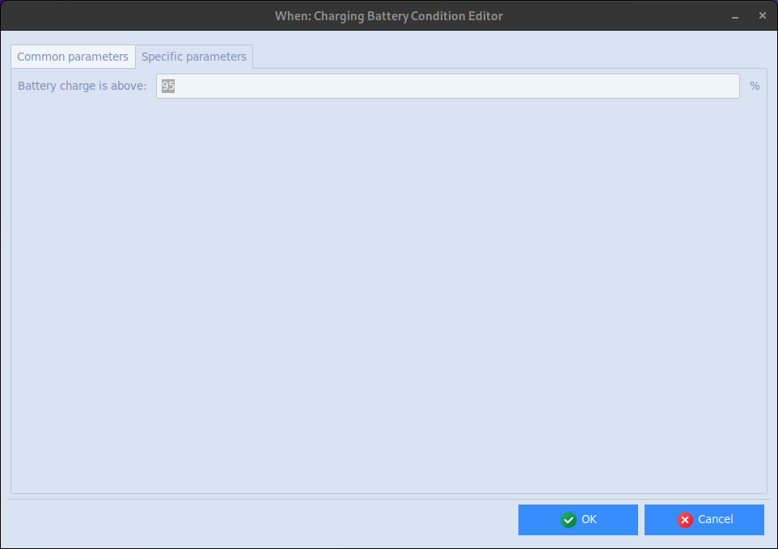
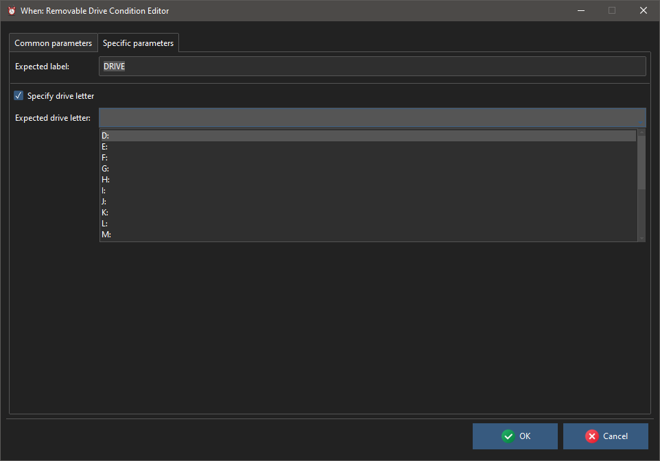

Extra Conditions
The condition items described here cover various different aspects of a session, and their availability may vary depending on the hosting platform and the presence of certain features. On Linux whenever is generally expected to be compiled with DBus support, on Windows it is expected to be compiled with WMI support.
System Load
This test verifies whether or not the system load is below a certain percentage and, if so, runs the related tasks. The only available specific parameter is the percentage threshold below which the test is considered successful.

The item can be used on Windows and Linux systems, on Linux it depends on the presence of the vmstat and bc OS commands, which may need to be installed on some distributions. The checks for this condition are performed about every minute.
Low Battery
This test checks whether the battery is draining and its charge is below a certain percentage and, if so, runs the related tasks. The only available specific parameter is the percentage threshold below which the test is considered successful.

The checks for this condition are performed about every minute.
Charging Battery
This test checks whether the battery is charging and its charge is above a certain percentage and, if so, runs the related tasks. The only available specific parameter is the percentage threshold above which the test is considered successful.

The checks for this condition are performed about every minute.
Removable Drives
Definition forms to check for presence of a removable drive are available, both for Windows and for Linux. The behavior and configuration is slightly different depending on the host platform.
Windows
On Windows, the label of the removable drive has to be specified in order to be somewhat more selective in choosing which removable drive has been made available to the workstation: the label can be edited by any Windows user, so it’s possible to appropriately set labels for thumb drives, cards, and so on, in a way that helps select tasks to be executed when a removable drive is inserted.

The label has to be specified by the user with no assistance: the exact string to be checked must be entered. Optionally, by checking the appropriate box, it is possible to specify on which drive letter the support is supposed to be auto-mounted: this is another parameter for fine-tuning, since often Windows reuses the same drive letter when the same removable drive is used.
Linux
On Linux, it’s only possible to choose among a system-determined list of available removable drive names, or it is possible for the user to specify the exact name: since these names are not always easy to remember, it is suggested that the removable storage to monitor is inserted when creating the condition in whenever, so that its name appears in the list.
It is not possible to specify the expected mount point: its determination, which depends on the specific Linux distribution and configuration, is up to the user.
Session Locked (Windows)
This check detects whether the session is locked. It does not depend on the desktop being idle (there is the idle session based condition for this purpose), so it is verified also when the user voluntarily locks the session via a key combination or a session menu entry.

Since on Windows the state is detected by querying the system actively, the user can decide if the check is performed at a normal pace (the default, every second minute), very often (the pedantic choice, every minute), or in a more relaxed way – that is, every five minutes.